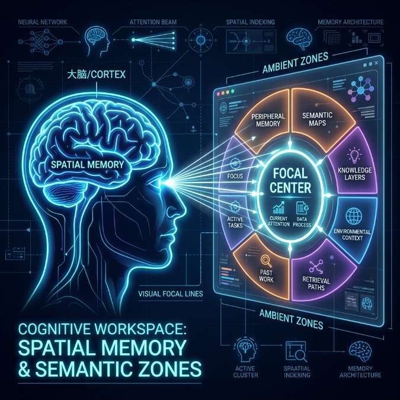

The Ultimate Guide to Video Multitasking

In the hyper-accelerated communication landscape of 2026, the traditional definition of "Multitasking"—doing two things poorly at once—is officially obsolete.
We have moved into the era of "Simultaneous Integration," where the requirement for total digital situational awareness demands a new kind of cognitive skill set. The modern professional—whether they are a market analyst, a competitive gamer, or a data-driven strategist—must be able to maintain deep focus on a primary task while simultaneously monitoring a global web of secondary information signals. This isn't just about "watching more"; it’s about "synthesizing more." To achieve this, you must move beyond the "chaotic scrolling" of the past and into the realm of "Strategic Information Architecture." This guide provides the tactical roadmap for navigating the high-velocity digital world of 2026 with maximum efficiency and zero burnout. Success today is about the clarity of your visual environment.
The Science of High-Velocity Focus: How Your Brain Adapts to Multi-Stream Environments
Contrary to the "Single-Task" dogma of the early 21st century, the human brain is remarkably plastic and capable of "Parallel Processing" in the right environment. In 2026, we understand that high-performance multitasking is less about "splitting attention" and more about "optimizing the focal hierarchy." Our brains are naturally designed to monitor wide horizons for threats while focusing on a specific objective. A well-designed multiscreen grid (like those enabled by YoutubeMulti) leverages this natural evolutionary advantage by assigning "Spatial Zones" for different levels of intelligence. This is the core of modern focus.
To optimize your focus, you must identify your "Focal Center." Position your primary deep-work task directly in your line of sight. Place your "high-velocity" monitoring tiles—like a live news update, a sentiment dashboard, or a technical analysis (TA) stream—in your immediate periphery. By consistently mapping specific types of information to specific regions of your visual field, you build "Spatial Memory." Your brain begins to associate a specific screen-region with a specific signal, allowing you to "check status" with a sub-second eye-flick, rather than a full mental recalibration. Spatial organization is the first pillar of modern multitasking. Total situational awareness is the result of focused, hardware-aware design.
Building Your Tactical Command Center: Visual and Acoustic Organization
A successful multitasking environment requires a "Mission-Controlled Dashboard." If your information sources are fragmented across dozen tabs or separate devices, you are introducing "Contextual Friction" into your workflow. Every click and "Tab-Switch" is a micro-interruption that destroys your focus and introduces latent risk. In 2026, the professional standard is a unified "Video Wall"—even if it's just a single monitor organized into dozens of high-performance tiles. The goal is to avoid "Tab-Switching" and instead achieve a "State of Flow" where all critical information is visible in a single glance.
Think about your "Acoustic Layer" as well as your "Visual Layer." In a multi-stream setup, audio can quickly become a source of chaos. To manage this effectively, use a tool like YoutubeMulti that allows you to "Solo" or "Mute" individual tiles with a single click. Dedicate your primary audio feed to the most critical "Voice of Authority" (perhaps a live unboxing or a technical interview), while keeping the secondary monitoring tiles on "Visual-Only." This "Acoustic Hierarchy" ensures that your primary mission remains the focal point while the secondary signals provide "Ambient Context." Multiscreen integration is about more than just more pixels; it’s about a more synchronized sensory experience. Total situational awareness is the result of focused, unified monitoring.
Cognitive Thresholds: Managing Information Density Without Burnout
The biggest challenge of the 2026 information age is "Fatigue." The constant stream of high-energy, high-velocity feeds can lead to rapid "Cognitive Overload"—where the brain’s "Central Executive" becomes overwhelmed, leading to decision-making decline. To be an effective "Information Strategist," you must respect your "Cognitive Threshold." This means moving away from the "Endless Scroll" on a small mobile device and toward a "Mission-Controlled Dashboard" that filters the signal from the noise. Clarity is more important than sheer volume.
Design your dashboard for "Cognitive Margin." Don't just fill every inch of your screen with noise; use "Visual Pauses" and "Contrast" to separate your functional zones. For instance, group all your "Market Tickers" in one cluster and your "Social Sentiment" in another. By creating these "Semantic Zones," you reduce the search-time required to find a specific piece of data. Additionally, using professional monitoring software that ensures "Zero-Stutter Playback" for 100 simultaneous videos is essential. A glitchy interface is a major source of mental friction. YoutubeMulti provides the pure technical stability needed to maintain a high-density dashboard without the high-density stress. Designing your environment is designing your thinking process.
Strategic Pauses and Context Restoration: The Art of the Recovery
In a high-stakes multitasking workflow, "Recovery" is as important as "Execution." Even the most well-designed dashboard requires strategic pauses to prevent fatigue. In 2026, the most resilient professionals use "Micro-Breaks" to reset their visual and mental baselines. During these breaks, move away from the screen, recalibrate your "focal distance" by looking at something distant, and allow your brain to process the accumulated data. This is "Context Restoration"—the act of clearing your mental cache so you can return to your dashboard with fresh clarity.
When you return to your Command Center, use your unified controls to "Resync" your signals. Our research shows that a single click to synchronize dozen of drifting streams provides a massive psychological "Reset" that improves focus for the next deep-work cycle. By managing your energy as as as your data, you ensure that you are always in the "Actionable Logic" zone. High-performance multitasking isn't about doing everything at once; it’s about doing the *right* things simultaneously in a psychologically optimized environment. Total situational awareness is the only path to absolute dominance in an information-heavy world. The era of total creator awareness starts with a stable grid.
Future Outlook: Neural Interfaces and the Elimination of Interface Latency
As we look toward 2027 and beyond, the future of multitasking is undeniably data-driven and highly transparent. We are moving toward a world of "Neural Interfacing," where our information will be spatially mapped in a 360-degree environment around our own subconscious—allowing us to "feel" data shifts before our eyes even see them. Future dashboards will likely include built-in "AI Attention Assistants," real-time "Narrative Map" overlays, and seamless integration with global reputation-integrity databases. YoutubeMulti is already providing the foundation for this high-tech future, allowing you to build your own bespoke "Strategic Intelligence Grid" today.
A Step-by-Step Workflow for Monitoring High-Stakes Events with YoutubeMulti
For the professional analyst or creator, having total situational awareness of their monitoring tools is non-negotiable. Using YoutubeMulti to build an "Operations Center" allows you to:
- Tile 1-4: The Primary Focus: Large, central tiles for your core objective (e.g., the primary live stream or technical chart).
- Tile 5-15: The Strategic Intelligence: Medium-sized tiles positioned in the periphery for live sentiment, news updates, and competitor monitoring.
- Tile 16: The Contrast Layer: A contrarian perspective or a different market index to ensure a balanced perspective and avoid "Confirmation Bias."
- Tile 17: The Global Context: A live feed from the specific region affected by the news (e.g., a Polish-language news portal).
- Unified Sync Command: Use our software to resync all 100 streams with a single click if network jitter or hardware lag causes a drift in the grid.
Conclusion: Final Thoughts on the Modern Multitasking Skill Set
The 2026 world of information monitoring is a rewarding but demanding landscape of data, sentiment, and design. It is no longer enough to just "be busy"—you must "be informed" at the speed of the market. By utilizing advanced multitasking strategies and professional tools like YoutubeMulti, you can ensure that you are always at the center of the intelligence curve. Don't just watch—monitor, analyze, and build your digital legacy in the multi-stream future. The era of total semantic awareness has arrived.